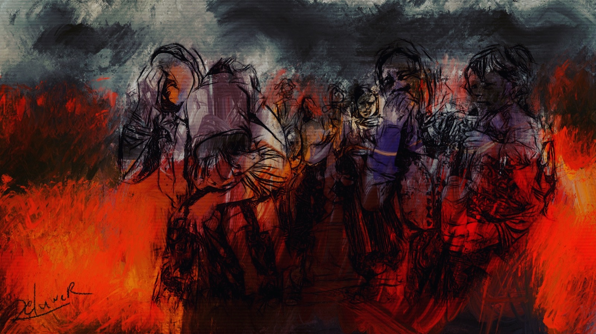

Über uns
Die zunehmenden politischen Konflikte überall auf der Welt und die gleichzeitig steigende Prävalenz psychischer Erkrankungen sind eine ernstzunehmende Entwicklung, die adressiert werden muss. Aus diesem Grund haben wir im Mai 2024 die studentische Initiative: Krieg Trauma Psyche als Angebot für Vereine, NGOs, Panels und andere Akteure gegründet. Mit unseren Vorträgen, Social-Media-Posts und weiteren Aktivitäten möchten wir für die Konnektivität von Gewalt und psychischen Folgen sensibilisieren.
Durch unsere Studienfächer Psychologie, Medizin und Rechtswissenschaften bieten wir eine interdisziplinäre Wissensbasis und können Sachverhalte in ihrer Komplexität verknüpfend darstellen. Durch die Förderung unseres Teams, z. B. durch Begabtenförderungswerke und andere Stiftungen, haben wir eine Vielzahl politischer, gesellschaftlicher und kultureller Veranstaltungen besucht und Wissen in diesen Gebieten erworben. Unser Team engagiert sich nebenbei auch in zahlreichen anderen Vereinen des gesellschaftlichen Zusammenlebens.
Unsere Initiative war ehrenamtlich geführt und nicht gewinnorientiert. Zum 30.09.2026 haben wir unsere Arbeit eingestellt; diese Seite dient als Archiv.
Unsere bisherige Arbeit kann auf Instagram nachverfolgt werden.
